|
＜お願い＞
毎度の事ですけど、今回もダウンロードに時間がかかると思います。
しかし本当に、このお話を楽しみたいのなら、フルダウンロードしてからお読み下さい。
それから、画面サイズは８００＊６００に合わせて書いてあります。
御協力、お願いします。
ＴＲＩＧＧＥＲ
ＡＮＤ
ＯＲＩＧＩＮＡＬ ＣＨＡＲＡＣＴＥＲ ＤＥＳＩＧＮ
ＭＡＳＴＥＲーＭＯＮＤＯ
ＯＲＩＧＩＮＡＬ ＳＴＯＲＹ
ＭＡＮＩＷＡ ＨＯＫＵＢＯＵ
ＰＩＣＴＵＲＥ ＤＥＳＩＧＮ
ＫＡＫＵＳＡＮ
彼が為にある、我が忠義
（かがためにある、わがちゅうぎ）
日曜の昼下がり、公園で遊ぶ小学生の男の子と猫型メイドロボット、それを木陰から見守る黒服の男・・・・・
この男の名は、後藤 忠義（ごとう ちゅうぎ）、公園で遊ぶ小学生のボディーガードをしている。
そして、その小学生は、緯度院 菱望（いどういん ひしもち）、日本有数の大財閥の御曹司である。
その菱望が手を振りながら、忠義のいる木陰まで駆け寄ってくる。
「忠義兄ちゃん、レオナがおやつの時間って言ってるよ！」
「菱望様、俺みたいな使用人を、そんな呼び方しないで下さい！」
忠義は、そう言って菱望をたしなめるが、実際はそんなに悪い気分ではない・・・
二年前、忠義は町の路地裏で、菱望に出会った・・・・
昔の忠義は、札付きの不良で毎日のように喧嘩していた。
しかし、その時の忠義は暴走族５０人を相手に喧嘩して、ボロボロになり路地裏に逃げこんたのだ。
迫り来る追っ手、それに恐怖しながら、路地裏で痛む右腕を押さえうずくまっている所を、菱望に出会った。
少年は、ぎらつく眼光で睨む忠義をものともせず、彼を病院に引きずっていき看病した。
病院のベットの上で、もうろうとする中、少年の声が響く・・・・
「お兄ちゃん、死なないで・・・・」
「お兄ちゃん、死なないで・・・・」
赤の他人の少年が、涙ながらに、自分の事を心配し、叫ぶ声・・・・・
忠義は、それを今も忘れていない・・・・
その後、菱望が大財閥の御曹司と知り、忠義は進んで彼のボディーガードになった。
忠義は、そうする事で、菱望に恩義を返せると思っているのだ。
木陰に敷かれたビニールシート、そこへ並べられる数々のクッキーやビスケット、
そこに、眼鏡をかけた猫型メイドロボットが、手に持つ水筒からコポコポとお茶をつぐ。
「ボッチャマ、お茶ガ入りマシタ」
この時代、ロボットはさほど珍しくない。
機械工業用のインダストリータイプ、軍用のコンバットタイプ、身の回りの世話をするメイドタイプ、
様々なタイプのロボットが町にあふれている。
そして、菱望の世話を焼いている、このレオナもメイドロボットの一台である。
メイドロボットは見た感じ、人間のそれと全く変わりないため、耳にアンテナや、ボディーペインティング、
レオナの様に人に在らざる物を付けられ区別されている。
しかし普通、菱望のような大財閥の御曹司ともなれば、メイドロボットを五六台付けられていても
おかしくないはずだが、ある事情があり菱望には、幼い頃から一緒にいるレオナしかいない。
「チュウギサマ、お茶ガ冷えマス」
レオナが、事務的に忠義にお茶をすすめる。
最近のメイドロボットは、人と同じように考え思考し感情を持つ、しかしこのレオナは古い中古品の
メイドロボットであるため、そういう人間らしい感情プログラムを一切組み込まれていない。
「レオナ、忠義兄ちゃん、このビスケットおいしいね！」
菱望は、出来合いのビスケットを口にほうばりニッコリと笑う。
どこにでも売っている、普通のお菓子をおいしそうに食べる菱望・・・・
自分の使用人や、ロボットのレオナにまで、分け隔てなく接する菱望・・・・・・
忠義は、そんな菱望が好きだった、この少年の笑顔を守るためなら、何でもしようと考えていた。
その時、公園に一陣の風が吹く・・・・
そこに現れた、一人の男・・・・・
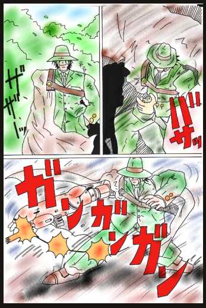
「！！」
「畜生！とうとう直接手を出してきたか！！」
忠義は菱望とレオナを抱きかかえながら、林の中に逃げ込む。
「菱望様、怪我は無いですか？」
忠義は、抱きかかえている菱望に問いかける。
「うん、僕は大丈夫、忠義兄ちゃん、いつも僕のせいでごめんなさい・・・・」
一年前に父を亡くした菱望は、この歳にして緯度院家の当主に祭り上げられた。
しかし、これに快く思ってない者がいた。
そう、菱望の母親である・・・
その母親というのは、菱望の父親が死ぬ前に再婚した後妻の事で、彼女は自分の連れてきた息子に
緯度院家の跡目を継がせたいと思っているのだ。
なので、今までも菱望を家から追い出すために、数々の嫌がらせや、いじめがあった。
菱望の使用人も、忠義とレオナだけなのも、菱望に手を出しやすくする為なのだ。
「は〜、は〜、くそ〜！！」
菱望とレオナを抱きかかえ、木陰から様子をうかがう忠義、その額からジットリと汗がにじむ。
「菱望様、大丈夫です、あなたは俺が守って見せます」
「忠義兄ちゃん・・・・」
忠義の胸の中で、恐怖をこらえながら菱望は忠義のスーツを掴む。
しかし菱望は掴んだ掌に違和感を覚え掌を見返してみる。
「！」
「お兄ちゃん、血が！」
「これくらい大したこと無いです、それよりアイツを何とかしなくては・・・・」
忠義はそう言うが、彼の顔からどんどん血の気が引いていき、足元に血溜まりが出来ていく。
「出血タリョウ、脈拍テイカ、生命にカカワル危険性ガアリマス、早急ニ治療スル事ヲお勧めシマス」
レオナが、事務的に忠義の怪我の状態を診断する。
「レオナ本当なの！！」
「ワタシは、ウソをツケマセン」
レオナは冷静に言い放つ。
「レオナ！少し黙ってろ・・・」
忠義はレオナを制止させようとするが、すでに言葉には力がなくなってきている。
その、忠義の様子を見た菱望は、うつむきながら一言、呟く。
「これ以上、僕の為に忠義兄ちゃんが傷つくのは嫌だよ・・・・」
「レオナ、僕がアイツを引きつけるからお兄ちゃんを守って上げて！！」
「了解シマシタ・・・・」
菱望はレオナの返事を聞くと、忠義の元から離れていく。
「菱望様、やめるんだ！！」
しかし、菱望はその言葉を無視し林の中を走っていく。
「チュウギ様、動くト傷がヒロガリマス」
「うるさい！どけろレオナ！！お前の主人が死ぬことになるんだぞ！！！」
「ダメデス、ボッチャマの命令ニハ逆らえマセン」
そうなのだ、感情を持たないロボットのレオナにとって、主人である菱望の命令は絶対で逆らえないものなのだ。
そのレオナに業を煮やした忠義は、レオナを押しのけ菱望を追おうとするが、撃たれた傷が疼き歩くことも
できないでいる。
「くそ！！」
菱望を命にかえて守ると誓っていたのにそれが出来ず、その守る相手に命を救われ、
そして何も出来ず菱望を死なせる事に、彼は情けなさと怒りを覚える。
しかし、無情にも傷口からどんどん血が流れ、体の自由が利かなくなっていく。
「ちくしょう、レオナ、お前も気づいているんだろ、俺はもうダメだ、菱望様を・・・・・・」
「菱望様を、俺の代わりに守ってやってくれ・・・・」
忠義の瞳から一筋の涙がこぼれる、それは主人を最後まで守りきれず息絶え、メイドロボットのレオナに
その全てを託すことしか出来ないでいる、自分への悔しさと後悔の涙。
忠義は震える右手でレオナの左手を力無く握りしめ、彼女の目をまっすぐ見ながら一言、呟く。
「レオナ、菱望様のことを頼む・・・・」
「ソノ命令を聞くコトハ出来マセン、ワタシはお坊チャマの命令を守りマス・・・・」
「何を言ってるんだ、俺の事はもういいから早く菱望様の所に行ってやってくれ・・・・」
そう、力無く言う忠義に向かって、レオナは意を決した様に彼の目をまっすぐ見返す。
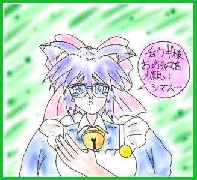
「レオナ・・・・」
ロボットのレオナの見せる初めての感情、それに戸惑う忠義。
「チュウギ様あなたを、死ナセハシマセン、アナタはお坊チャマにトッテ大切な人ダカラ・・・・・・」
そう言うと、レオナの髪の毛がスルスルと伸び、忠義の頭に突き刺さっていく。
しかし、忠義の体力はもう限界で、それをどうすることもできない。
「チュウギ様の肉体は守れナクトモ、アナタの心ダケは守ってミセマス・・・・」
「ワタシは、お坊チャマヲ守るコトハデキマセン、ダカラチュウギ様がワタシの代わりニ、お坊チャマを守って
上ゲテ下サイ、それがワタシの最後の願い・・・・」
そう言い終わると、レオナの藤色の髪が黄金色に輝き出す。
「スタンバイ・・・・ＯＫ」
「脳波登録・・・・・ＯＫ」
「精神抽出開始・・・・・・ＭＩＮＤ ＩＮ！」
忠義は、暗い奈落の底に落ちるような感覚を覚えると同時に、その視界は急激に反転する。
・
・
・
「これは・・・いったい・・・・」
呆然とする忠義の目に、最初に飛び込んできたモノは、ガラス越しに映る自分の亡骸だった、
それはまるで、ブラウン管越しにテレビを見ているような現実味のない、作り物のような光景だった。
今の状況を理解できない忠義の耳に、菱望の声が聞こえてくる。
「僕は、ここだ！狙うなら僕だけをねらえ！！」
その声と共に、忠義の足は反射的に菱望の元に向かって動き出す、今まで瀕死の状態で
一歩も動くことが出来なかった事がウソのように・・・・
「くそ！坊ちゃま、死なないでくれ！！」
忠義は、林の中の木々を高速でかわしながら、菱望のいる所まで一直線に駆けぬけていく。
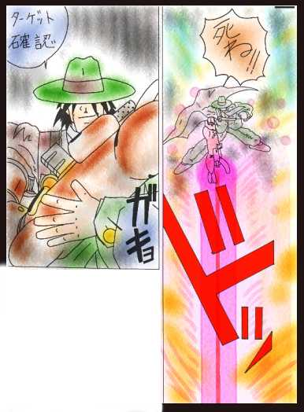
「坊ちゃま！！」
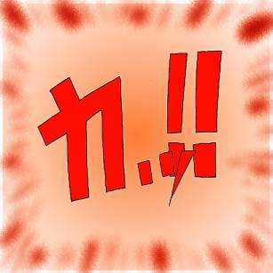
まばゆい閃光が辺りを包み、殺し屋は満面の笑みを浮かべ、菱望を亡き者にした事を確信する。
しかし・・・
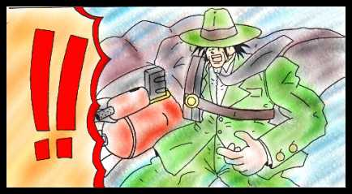
「バッ、バカな・・・・」
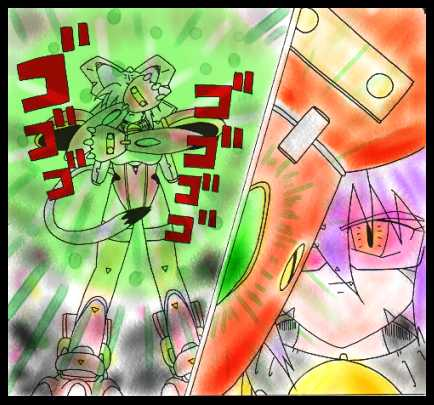
立ち上る爆煙、そして後ろでうずくまる菱望の前で、忠義は全て理解した・・・
頭の中を高速でよぎるデータ（情報）と、彼女が製造され現在に至るまでのメモリ（記憶）から・・・・
そして・・・・・・・
何故、彼女は感情を持ってなかったのか・・・・・
何故、彼女は菱望といつも一緒にいたのか・・・・・
あらゆる束縛を破るため、その全てを忠義に任し消えていったのか・・・・・
彼（彼女）は、理解した・・・・
今まで自分に優しく接してくれた、菱望を大切思う彼女の気持ち・・・・・
それを、決して表面に出すことが出来ないでいた、彼女のもどかしさ・・・・・
菱望を守ると誓い、志半ばで息絶え、彼女の全てを奪い生きながらえた情け無い自分への苛立ち・・・
そして、何よりも、二人に分け隔てなく愛情と優しさを与えてくれた、
菱望を傷つけようとした、目の前の男に対する強烈な怒り・・・・
それらの感情が、忠義の中で急激に膨らみ、その全てが目の前の男にぶつけられる！
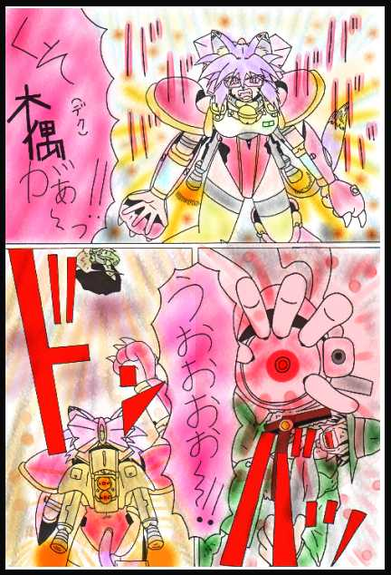
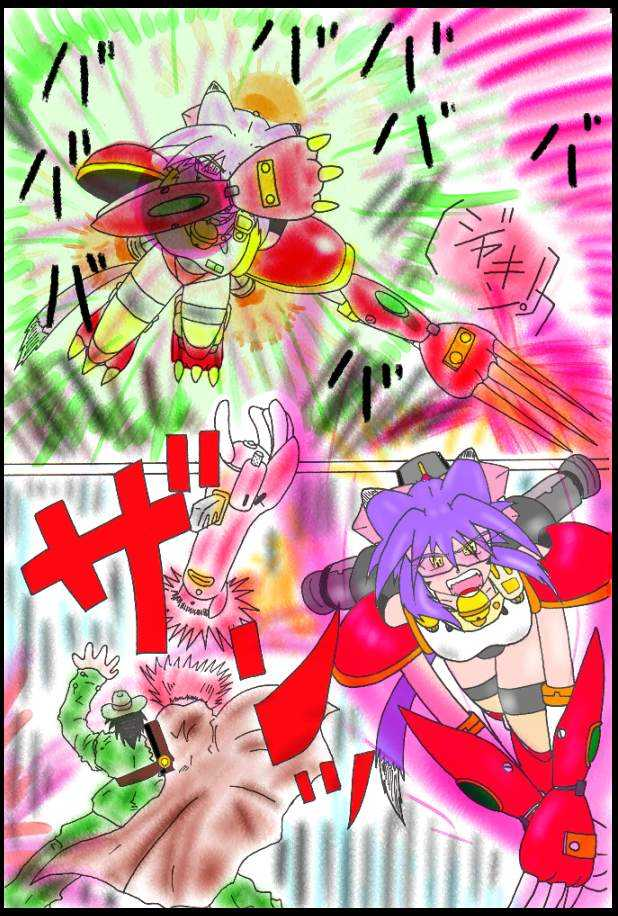
全ては終わった・・・・・
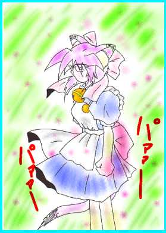
忠義にやられた殺し屋は逃げていき、焼けた林の中でたたずむ二人・・・・
「レオナ・・・・・」
「お兄ちゃんは、お兄ちゃんはどうしたの・・・・・」
彼女は、うつむきながら菱望に答える・・・・・
「後藤忠義は死にました、あの殺し屋によって・・・・」
「！！」
レオナによって告げられた忠義の死・・・・・・
「そんな、そんな事って・・・・・」
大好きな忠義の死・・・・・・
菱望が今まで、継母のいじめや嫌がらせに耐えてこれたのも、忠義やレオナがいたからなのだ。
その唯一の心の支えが死んだことを知った菱望は、その瞳からポロポロと大粒の涙を流し、泣き叫ぶ。
「うっ、うっ、うわああああ〜〜〜！！」
菱望は、その場で泣き崩れる・・・・
そこへ、彼女は歩み寄り、優しく彼を抱きしめる。
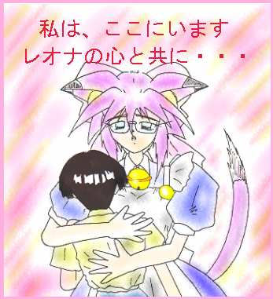
「えっ・・・・」
菱望は涙で潤んだ瞳で、レオナを見上げる。
「私は、どんなことがあっても、菱望様を守り続けます・・・・」
それは、自分とレオナに誓った事、自分を消してまで忠義に全てを託した、レオナへのせめてもの償い・・・・
「私は、どんなことがあっても、貴方のそばで、お仕えします・・・・」
それは、どんなに姿が変わっても
どんなに、心が変わっても
この気持ちだけは、変わらない
そう、私の忠義は、
貴方の為だけにあるのですから・・・・・・
（おしまい）
あとがき
こんにちは、原作担当の北房 真庭（ほくぼう まにわ）です。
って、誰かわからん？
わいじゃ、オヤジじゃ〜
そろそろオヤジって名前も飽きてきたし、実験小説が終わったんで、心機一転名前を変えてみた。
これからは、この名前で行こうと思うんで、どうぞよろしゅうに！
でっ、今回の話のテーマは、ＲＥＩＫＯの設定を使って、真面目な話を書こう！
って事で、こんなになったんじゃが、どないでしょう？
ＲＥＩＫＯを作った、あのじじぃなら、猫型ロボット作りそうでしょう！
それから、萌え所がないって思った人、ごめんなさい！
まぁ、わいが書くことはこのくらいじゃろう、後は相方に任すとして、この話を読んで下さった皆さん！
良かったら、感想書いて下さい！よろしくお願いします！！
（北房 真庭）
ちぃーす！！角さんです！
今回も無茶しました！ＭＯＮＤＯさんにお話つけて貰い、お礼をかねてお話書いてみました。
しかし、これはお礼になってませんね！なんか趣味丸出しで書いたみたいで、ごめんなさい！
でっ、今回、俺に課せられたテーマは、挿し絵を越えた挿し絵を書け！
って事で前回、容量の関係上出来なかった事を、とうとうやりました！
前から、これやってみたくてと言うか、誰かやってくれないかなぁ〜と思っていたんですけど、
結局、自分でやる羽目になってしまった・・・・・・
でも、こういう演出してくれると、読み手の俺としては、ものすごく嬉しいんだけど・・・
まぁ、そんなこんなで、説明不足な所もあるお話ですが、皆さんが楽しんでくれたなら幸いです。
さて、今回で手の内を全て見せたから、次はどうなる事やら・・・・・ はぁ〜〜
（角さん）
おまけ
今回のおまけは、ギャラリーと言う事で、絵を書いてみました。（なんかこんなのばっかり）
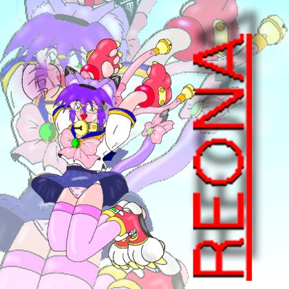
［対象イラスト］ ＃１６ ニャンパギータ
［作品タイトル］ ニャンパギータ（ありがとう！改造くん！！バージョン）
［ペンネーム］ 角さん
［コメント］ セーラー服バージョンのお話を書けなかったので絵を書いてごまかします。
しかし、眼鏡に、つり目に、猫娘、書くのが苦手の三殺陣、辛かったですよ〜〜！！
特に、優しいつり目、これは俺には書けません！
おじさんが書くキャラ、たれ目しかいないの・・・・・・
他にもたくさん書くの苦手なモノありますが、苦手を克服するために、がんばって書いてみました。
そうそう、後ハイヒール書くこと出来ません！（断言！）
そう言えば、折角セーラー服書いたんだったら、ルーズソックス書けば良かったかな？（爆）
最後に、ＭＯＮＤＯ様、それに関係各所の皆様、本当に無茶苦茶やって
ごめんなさいでした！！
では、さようなら〜〜
|